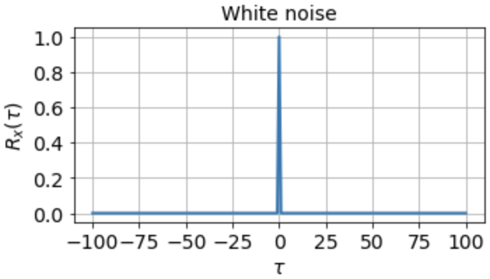
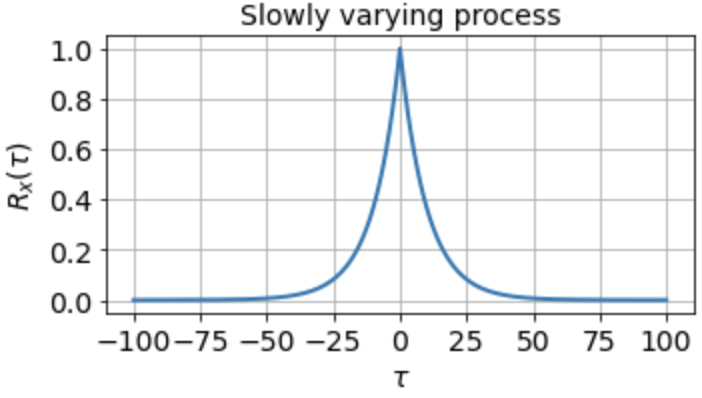
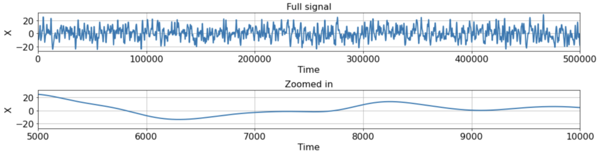
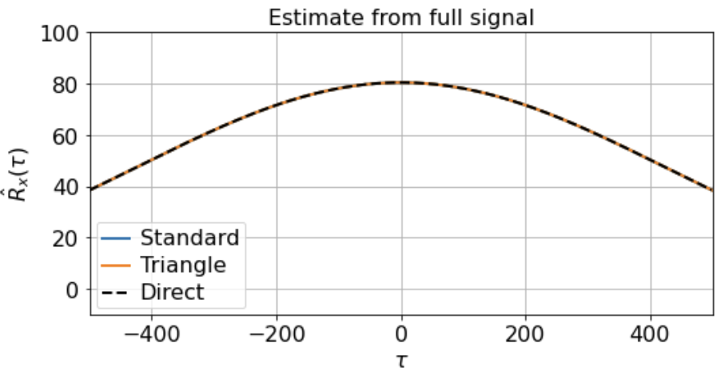
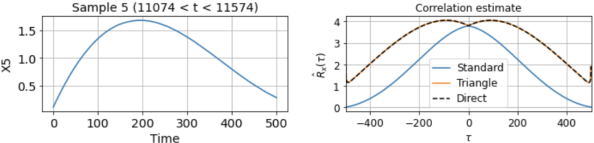
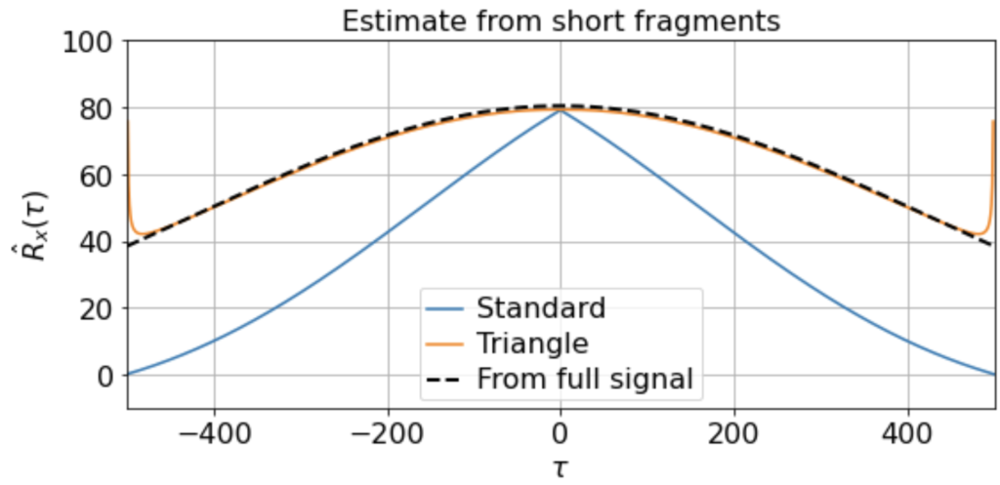
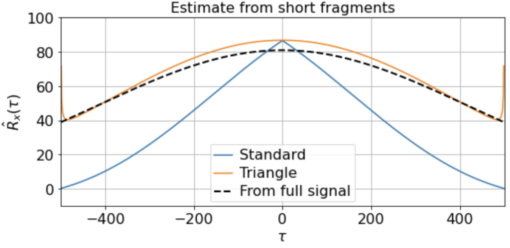
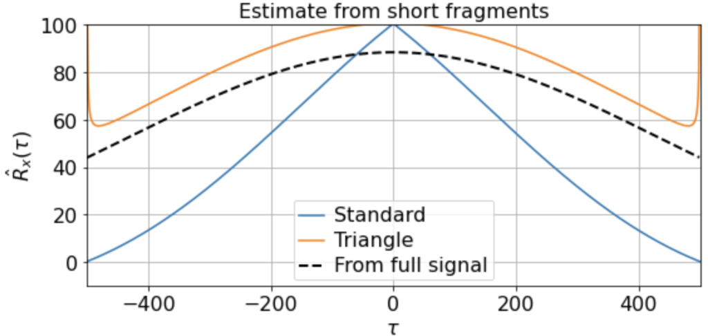
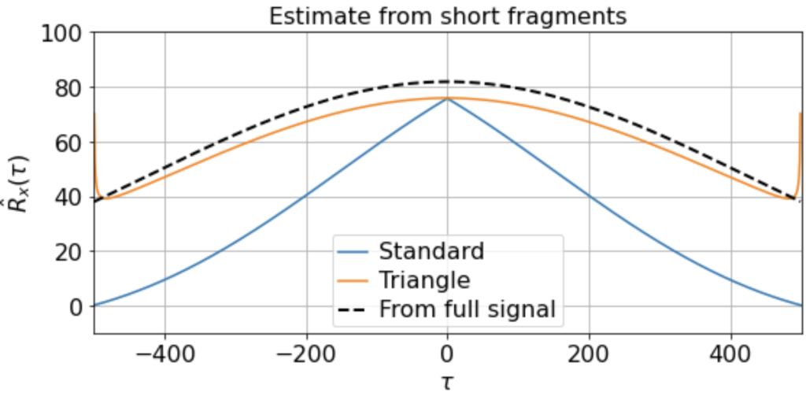

Estimating slow correlations from samples of limited duration
TL;DR: Many biological time-series have slow correlation timescales, but default estimators can greatly underestimate these correlations, even if you have enough data to resolve them. Normalizing by a triangle function removes the bias, but at the cost of potentially yielding an "invalid" correlation function estimate.Science is replete with time-series data, and we'd like to analyze this data to extract meaningful insight about the structure and function of the systems that produce them.
If you already know what correlation functions are, skip directly to the estimation section.
Auto- and cross-correlation functions
Suppose we have a stationary, univariate random process \( X(t) ~ P[X(t)] \), and suppose we know the distribution \( P[X(t)] \). Its autocorrelation function \( R_x(\tau) \)(sometimes written \( R_{xx}(\tau) \)) is defined as
\[ R_x(\tau) \equiv \mathbb{E}[X(t)X(t+\tau)] \]where \( \tau \) is the time lag between two measurements and \( \mathbb{E}[\dots] \) is the expectation over samples \( X(t) \). This function \( R_x(\tau) \) gives the expected product of the signal measured at two different timepoints separated by \( \tau \). Stationarity means that \( R_x(\tau) \) is only a function of \( \tau \) and not of \( t \).
The autocovariance function \( C_x(\tau) \) is related to \( R_x(\tau) \) via
\[ C_x(\tau) \equiv \textrm{E}[(X(t) - \mu_x)(X(t+\tau) - \mu_x)] = R_x(\tau) - \mu_x^2 \]i.e. it is the autocorrelation function of the signal after its mean \( \mu_x \) has been subtracted off. This function \( C_x(\tau) \) specifies more explicitly how the signal measured at two timepoints separated by \( \tau \) covary relative to the signal mean \( \mu_x \). For zero-mean signals, however, \( C_x(\tau) = R_x(\tau) \).
A key property of an autocorrelation function in general is that \( |R_x(\tau)| \ll R_x(0) \), i.e. the autocorrelation function is bounded by \( R_x(0) \). And for a zero-mean signal \( R_x(0) = C_x(0) \) is just the variance \( \text{Var}[X(t)] \), also independent of \( t \).
(Note: the autocovariance \( C_x(\tau) \) equals to the covariance between \( x(t) \) and \( x(t+\tau) \), but the autocorrelation \( R_x(\tau) \) does not equal the Pearson correlation \( R \) between \( x(t) \) and \( x(t+\tau) \). The Pearson correlation is the covariance scaled by the geometric mean of the variances, which restricts its value to lie between \( [-1, 1] \), whereas values of the \( R_x(\tau) \) have no such restrictions.)
Similarly, the cross-correlation function \( R_{xy}(\tau) \) between two signals \( X(t), Y(t) \) is given by
\[ R_{xy}(\tau) \equiv \textrm{E}[X(t)Y(t+\tau)] \]and their cross-covariance function \( C_{xy}(\tau) \) by
\[ C_{xy}(\tau) \equiv \textrm{E}[(X(t) -\mu_x)(Y(t+\tau) - \mu_y)] = R_{xy}(\tau) - \mu_x\mu_y. \]One of the most important things a correlation function tells us about is the timescales in the signal. The autocorrelation function of white noise, for instance, is zero everywhere except at \( \tau = 0 \):

indicating that the signal is completely uncorrelated with itself at any nonzero time lag. For a signal that fluctuates more slowly, however, the autocorrelation function might look something like

which tells us that the signal is highly correlated with itself at neighboring timepoints and generally up to a timescale of about \( \tau_0 \approx 10 \) timesteps, but is uncorrelated with itself at any \( \tau \gg \tau_0 \).
If we know the true distribution \( P[X(t)] \) or \( P[X(t), Y(t)] \), auto- and cross-correlation functions are determined precisely, since they are explicit function(al)s of the known distribution. Oftentimes, however, we do not know the true distribution. Instead we want to estimate these correlation functions from a sample or collection of samples we observe, and which we model as coming from some underlying distribution we wish to understand.
Estimating correlation functions
Suppose for the moment that we have one univariate sample X1*(t) ≡ [x1*(1), x1*(2), ..., x1*(T1)], e.g. one sequence X1*(t) of T1 evenly spaced measurement from some recording device. We will assume this comes from some distribution P[X(t)].
Typically when estimating correlation functions one first normalizes the signal by subtracting off an estimate of its mean μx. If we have just one sample, this estimate will be given by
\[ \hat{\mu}_x = \frac{1}{T_1} \sum_{t=1}^{T_1} x_1^*(t). \]For multiple samples X1*(t), X2*(t), ..., Xm*(t), e.g. taken in m different recording sessions, we would use
\[ \hat{\mu}_x = \frac{1}{\sum_i T_i} \sum_{i=1}^m \sum_{t = 1}^{T_i} x_i^*(t) \]i.e. the average mean estimate across all the recording sessions, weighted by the session durations.
We can then construct our zero-mean signal
\[ X_i(t) = X_i^*(t) - \hat{\mu}_x \]which will be easier to work with, and which we'll focus on for the rest of the post. We'll also only focus on the autocorrelation function Rx(τ), although all the same reasoning applies to cross-correlation functions Rxy(τ) as well.
The direct estimator
Given our one sample X1(t), the unbiased estimator for Rx(τ), which is just the covariance (because we removed the mean) between x(t) and x(t + τ), is given by
\[ \hat{R}_x(\tau) = \frac{1}{N_i-1} \sum_{t=1}^{N_i} x_i(t)x_i(t+\tau) \]which is just the usual covariance estimator computed by summing over the product of all Ni (where Ni = Ti - τ - 1) valid pairs (x(t), x(t+τ)) and dividing by Ni - 1.
This we will refer to as the "direct" method, since it directly applies the usual sample covariance formula. (Note that for multiple samples, one collects all valid pairs (x(t), x(t+τ)) across all samples, and divides by Ntotal - 1, where Ntotal = T1 - τ - 1 + T2 - τ - 1 + ... .)
The advantages of the direct method are that (1) it gives an unbiased estimate of Rx(τ), and (2) it's pretty easy to deal with NaNs, since you can just ignore all the (x(t), x(t+τ)) pairs that include a NaN and decrement Ntotal accordingly. A disadvantage, however, is that it is quite slow, since you have to loop explicitly over all τ.
The standard estimator
A faster method, employed all over signal processing is use the estimator
\[ \hat{R}_x^{st}(\tau) = \frac{1}{T_i - 1} \sum_{t=1}^{T_i-\tau} x_i(t)x_i(t+\tau) = \frac{1}{T_i - 1} x(t) \ast x(-t) \]which estimates the correlation function via the convolution of x(t) and x(-t). We'll call this the standard estimator. The advantage of the standard estimator is that convolutions can be done via the Fast Fourier Transform (FFT), which makes for a much faster algorithm, especially when we have long time-series or high sampling rates.
The key difference between the direct and the standard estimator is that the latter is normalized by Ti-1, which is not a function of τ. This is how SciPy's scipy.signal.correlate works, along with MATLAB's xcorr function with default settings. In fact, by default these algorithms don't even divide by Ti-1, but instead return an "unscaled" version of the covariance function:
While this is quite fast, as well as quite useful in many applications, the downsides are that (1) it's hard to deal with NaNs, since this will generally preclude performing a straightforward FFT, and (2) this estimator can introduce a substantial bias, since the normalization is the same for all τ, even though we sum over different numbers of (x(t), x(t+τ)) pairs for different τ.
Unfortunately, the NaN problem is only solved by using the direct method (or via interpolating first, but that's another story), but we can solve the bias problem quite simply.
The "triangle" estimator
To remove the bias from the standard estimator, we can just divide the result of the standard estimator by a normalization function that does depend on τ, so as to match the direct estimator. In other words, we can use the estimator
\[ \hat{R}_x^{tri}(\tau) = \frac{\hat{R}_x^{st}(\tau)}{T_i - |\tau| - 1} = \frac{x(t) \ast x(-t)}{T_i - |\tau| - 1} . \]which we'll call the triangle estimator since the normalization Ni(τ) = Ti - |τ| - 1 is a triangular function of τ, and provides an unbiased estimate of Rx(τ) since it correctly accounts for the different number of terms in the sum for different time lags τ.
Therefore, if you want an unbiased correlation function estimate from a sample time-series, use the triangle estimator. (Note: you'll have to do this yourself in Python, or specify "unbiased" as the "scaleopt" argument of MATLAB's xcorr).
Why the default estimator is biased
It may seem strange that signal processing packages use a biased estimator by default, when the unbiased one is so easy to compute. So why is the biased one the standard?
First, if your recording time far exceeds the timescales you expect in your signal, it doesn't really make a difference. For instance, if Xi(t) were a 10 kHz, 100-second recording of a noise-driven RC circuit with a time constant τRC somewhere in the range of 1-10 ms, then we would have that
\[ \frac{N_i(0 ms)}{N_i(100 ms)} = \frac{100 s - 0 ms - .1 ms}{100 s - 10 ms - .1 ms} = \frac{99.999 s}{99.989 s} \approx 1 \]i.e. the normalization factor in the whole range from 0-100 ms (which should be plenty to estimate a 10 ms time constant) barely changes at all, due to the long recording time. Cases like this are common in signal processing, and so even though the estimator is a bit biased, if your recording time greatly exceeds the timescales you expect in the signal, it really doesn't make much difference.
Second, and a bit more fundamental, is that the correlation function estimated via the unbiased triangle estimator can end up being an invalid correlation function. In particular, one can end up with an estimate where
\[ \hat{R}_x^{tri}(0) < \hat{R}_x^{tri}(\tau) \]for some τ ≠ 0, which breaks the important property that Rx(0) ≥ |Rx(τ)| for all τ. This shouldn't be too surprising, since when normalizing at τ = 0 we divide by a very large number and when normalizing at very large τ we divide by a much small number, which can drastically amplify small fluctuations in the estimator.
Depending on what you're trying to do, this may or may not be a problem. Having an invalid correlation function, however, can greatly interfere with prediction or sampling, i.e. you could not use an invalid correlation function to specify a valid random process P[X(t)]. Since these are common use cases in signal processing, often a valid yet biased correlation function estimate is preferred over an unbiased but invalid estimate.
A realistic case where this makes a difference
It follows that the biased estimator really only causes problems when the correlation timescales in the data are on the same order as the sample duration. Now, you might be thinking that if we're in that regime we have no hope of estimating correlations at those timescales in the first place, since we simply don't have enough data. While the triangle estimate of Rx(400) from a 500 timestep sample may be unbiased, it will have huge variance, since if the signal really is significantly correlated over 400 timesteps, then the 99 timesteps available to the estimator at τ=400 will be far from i.i.d., so we'll have too few effective independent samples for anything useful anyway.
While that is perfectly sensible, one case where this matters is when we have a large number of short samples of our data. In fact, this is quite common in biology, e.g. if we have data across many short experimental "trials", if we're computing behavioral correlations from video data with frequent occlusion periods, if we're studying brain activity conditioned on a specific brief behavioral states, etc.
To be concrete, let's see how this all plays out in the following scenario. Suppose we have a single ground-truth signal X(t) of T = 500K timesteps, with an intrinsic timescale of about 300 timesteps (constructed here by smoothing white noise with a 300-timestep squared exponential filter):

As you can see, the signal is smooth when we zoom in far enough, hence far from i.i.d. close up. Suppose, however, that we're lucky enough to measure the full signal across all 500K timesteps, and we estimate the correlation function from \( -500 < \tau < 500 \) using either the direct, standard, or triangle estimators. In this case, the estimator we use does not really matter, as the estimates are extremely similar:

Suppose, however, that we only observe X(t) for 500 timesteps at a time, and that these 500-timestep fragments are randomly distributed throughout the full signal. For instance, maybe we're interested some slow metabolic process only when the animal is awake, but the animal is only awake for 500 timesteps at a time. Or we're interested in some state-dependent neural computation, but the state of interest only occurs in about 500-timestep windows.
As usual, we first estimate the mean μx across all samples. We then use this to estimate the correlation function Rx(τ) from each 500-timestep sample. Using our three different methods produces something like:

Now we see clearly that the estimates differ rather wildly both across individual samples (since each sample contains only a small, nonrepresentative part of the full signal), as well as between the standard and triangle estimators (and only the triangle estimator matches the direct estimator).
Notably, for τ near 500, the standard estimator estimates Rx(τ) ≈ 0 for all samples, even though we know Rx(500) should be around 40 (see the estimate from full signal above). On the other hand, the standard biased estimator has very low variance around τ near 500, whereas the triangle estimate, while unbiased, is kind of all over the place for Rx(τ ≈ 500). Moreover, we can see in the sample X5 that the estimated correlation function is in fact an invalid correlation function, since Rx(100) > Rx(0). Thus, if you wanted to use an unbiased estimate of the correlation function for sampling purposes, you would run into trouble.
Nonetheless, if we have sufficiently many samples, even if they are of short duration, we can still construct a good estimate by averaging the estimated correlation functions over the samples:

Here we find that the triangle estimator does a much better job at capturing the nonzero slow correlations present in the signal and matches the direct estimate from the full signal much better than does the standard estimator. (Although note that there is still fairly high variance at the edges, since Ni is so small.)
There will be variation, of course, in the averaged triangle estimate across different renditions of this "experiment". E.g. running it a few times (for 200 x 500-timestep windows taken from a 500K timestep signal) we get



etc. But in all cases the triangle estimator provides a far better match to the correlation function estimated from the full signal, whereas the standard estimator systematically underestimates the slow correlations.
Time-series analysis is a crucial part of science. The life sciences in particular are full of slow proceses, and when analyzing data it is important to understand how the details of your analyses affect your results and interpretations. Overall, I hope that this post has helped clarify how different correlation function estimators operate, and how they can hide or reveal interesting features of your data in different circumstances.
You can view or download the Jupyter notebook accompanying this post here.
Happy sciencing.